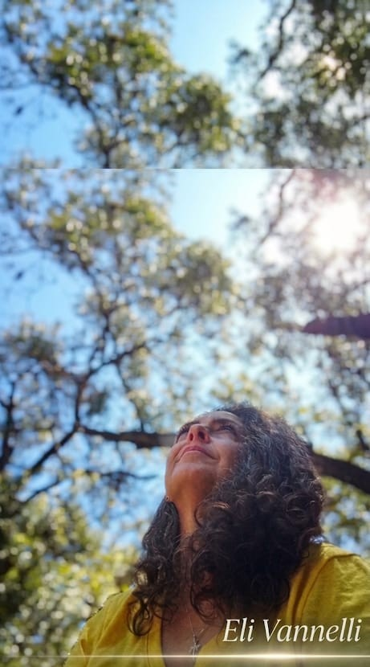
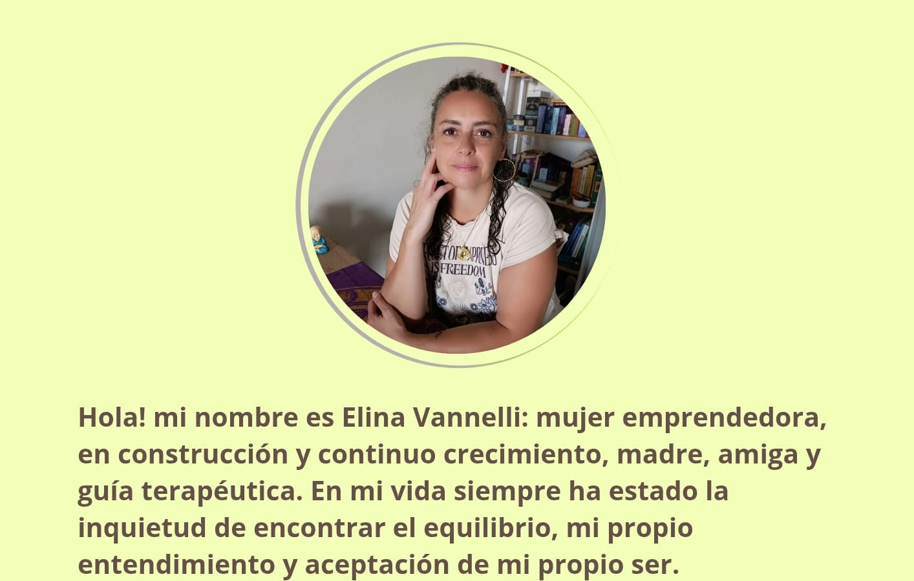
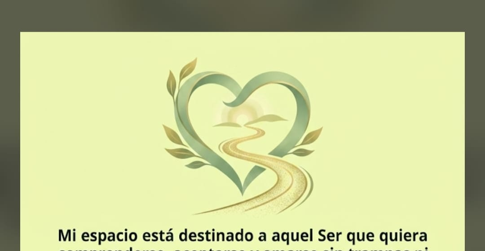

Sendero 22
Tu camino de integración y propósito.
Ver más
Sabiduría de la Matriz de Agua
Terapias emocionales, llaves de trabajo interior y oráculos propios para acompañarte a comprenderte, aceptarte y amarte sin trampas ni escondites.

Sobre mí
Mujer emprendedora, en construcción y continuo crecimiento, madre, amiga y guía terapéutica.
En mi vida siempre ha estado la inquietud de encontrar el equilibrio, mi propio entendimiento y aceptación de mi propio ser. A lo largo de los años el servicio ha formado parte de mi día a día, llevándome a esta labor de cultivarme y descubrirme con asombro dones que residían en mi interior.
De esta manera la vida me hace comprender y me brinda la posibilidad de acercarme a los demás a través de las palabras, con la escucha o simplemente abrazando.
Al día de hoy me desarrollo como Terapeuta Emocional a través de métodos diseñados por mí, en base a Biodescodificación, Tarot, Numerología, Vibración y Arte. Apostando y guiando a un Ser más consciente y presente para un mundo mejor.
Eli

Espacio insignia
Mi espacio está destinado a aquel Ser que quiera comprenderse, aceptarse y amarse sin trampas ni escondites.
Es un espacio de escucha, con apertura y sin juicios. Mis métodos te van a llevar a descubrir realmente quién sos y a entender, desde una perspectiva nueva, diferente y amorosa, la construcción de tu propia persona desde sus comienzos.
El Sendero a tu Corazón es una comunión con el sentir, con todo aquello que se guarda y no se dice. Es un camino para que transiten todos aquellos que realmente quieran ser y sentir su verdad.
Conocer másLlaves
Herramientas integrativas para abrir el camino hacia tu interior.
Tu camino de integración y propósito.
Ver másMétodo de Vibración, Cristales y Geometría Sagrada para integrar lo que sentís, en vez de luchar contra eso.
Ver másUna lectura de tarot para que recuperes el norte y despejes tus dudas.
Ver másCelebraciones
Encuentros grupales y ceremonias para celebrar la vida en compañía de tu tribu.
Un cumpleaños diferente, una experiencia inolvidable: transformá tu festejo en un ritual de conexión.
Ver másOráculos propios
Cada oráculo nace de un proceso propio de canalización, pensado para acompañar momentos concretos del camino de quien consulta.
Un oráculo de mandalas para conectar con la energía del fuego.
Ver másMensajes de las hadas, protectoras y guías de la naturaleza.
Ver másMensajes sencillos para que niñas, niños y familias comprendan sus emociones.
Ver másTienda
Elegí una llave, una celebración o un oráculo y coordiná el pago y los detalles directo por WhatsApp.
Espacio insignia: un lugar de escucha, sin juicios, para comprenderte, aceptarte y amarte sin trampas ni escondites.
Consultar valor
Pedir por WhatsAppTu camino de integración y propósito.
$3.000 / USD 75
Pagos: Prex o PayPal
Pedir por WhatsAppMétodo de Vibración, Cristales y Geometría Sagrada para integrar lo que sentís, en vez de luchar contra eso.
$1.800
Pedir por WhatsAppUna lectura de tarot para que recuperes el norte y despejes tus dudas.
$1.500
Pedir por WhatsAppUn cumpleaños diferente, una experiencia inolvidable: transformá tu festejo en un ritual de conexión.
$6.000 (grupo de hasta 10 personas, en Montevideo) · $350 por invitado adicional desde la persona 11
Pagos: BROU, Prex o efectivo. Se reserva señando el 50%, y el saldo se abona el día de la Celebración
Pedir por WhatsAppUn oráculo de mandalas para conectar con la energía del fuego.
$1.000
Pedir por WhatsAppMensajes de las hadas, protectoras y guías de la naturaleza.
$1.250
Pedir por WhatsAppMensajes sencillos para que niñas, niños y familias comprendan sus emociones.
$1.500
Pedir por WhatsAppAgenda
Elegí el día y horario que mejor te quede. La confirmación llega directo a tu correo y al calendario de Eli.
¿Preferís coordinar por mensaje? Escribí por WhatsApp.